Where are we so far?
- Introduction:
vignette("gcplyr") - Importing and transforming data:
vignette("import_transform") - Incorporating design information:
vignette("incorporate_designs") - Pre-processing and plotting your data:
vignette("preprocess_plot") - Processing your data:
vignette("process") - Analyzing your data:
vignette("analyze") -
Dealing with noise:
vignette("noise") - Statistics, merging other data, and other resources:
vignette("conclusion")
So far, we’ve imported and transformed our measures, combined them with our design information, pre-processed, processed, plotted, and analyzed our data. Here, we’re going to learn potential strategies for dealing with noise in our growth curve data.
If you haven’t already, load the necessary packages.
library(gcplyr)
#> ##
#> ## gcplyr (Version 0.12.4, Build Date: 2023-01-30)
#> ## See http://github.com/mikeblazanin/gcplyr for additional documentation
#> ## Please cite software as:
#> ## Blazanin, Michael. 2023. 'gcplyr: manipulate and analyze growth
#> ## curve data.' R package version 0.12.4
#> ##
library(dplyr)
#>
#> Attaching package: 'dplyr'
#> The following objects are masked from 'package:stats':
#>
#> filter, lag
#> The following objects are masked from 'package:base':
#>
#> intersect, setdiff, setequal, union
library(ggplot2)
#This code was previously explained
#Here we're re-running it so it's available for us to work with
example_design <- make_design(
pattern_split = ",", nrows = 8, ncols = 12,
"Bacteria_strain" = make_designpattern(
values = paste("Strain", 1:48),
rows = 1:8, cols = 1:6, pattern = 1:48, byrow = TRUE),
"Bacteria_strain" = make_designpattern(
values = paste("Strain", 1:48),
rows = 1:8, cols = 7:12, pattern = 1:48, byrow = TRUE),
"Phage" = make_designpattern(
values = c("No Phage"), rows = 1:8, cols = 1:6, pattern = "1"),
"Phage" = make_designpattern(
values = c("Phage Added"), rows = 1:8, cols = 7:12, pattern = "1"))
sample_wells <- c("A1", "F1", "F10", "E11")Introduction
Oftentimes, growth curve data produced by a plate reader will have
some noise it it. In model-fitting analysis of growth curves implemented
by other packages, the effect of this noise is often eliminated by the
fitting step. However, since gcplyr does model-free
analyses, our approach can sometimes be more sensitive to noise,
necessitating steps to reduce the effects of noise.
When assessing the effects of noise in our data, one of the first steps is simply to visualize our data. In particular, we want to visualize the raw data, but also any derivatives we’ll be using in our analyses. This is especially important because per-capita derivatives are often the most sensitive to noise, especially when bacterial population sizes are small. By visualizing our data, we can assess whether the density, derivative, and per-capita derivative are all changing smoothly, as we would expect. If, instead, we observe spikes and rapid fluctuations, we know that noise is likely to throw off our estimates of maxima and minima of the data or derivatives.
Broadly speaking, there are three strategies we can use to deal with noise:
- Using fitting during derivative calculations
- Smooth the raw data
- Analyze only less-noisy subsets of the data
Let’s start by pulling out some example data. Luckily for us, there is a version of the same example data we’ve been working with but with simulated noise added to it.
#This is the data we've been working with previously
noiseless_data <-
trans_wide_to_tidy(example_widedata_noiseless, id_cols = "Time")
#This is the same data but with simulated noise added
noisy_data <- trans_wide_to_tidy(example_widedata, id_cols = "Time")
#We'll add some identifiers and then merge them together
noiseless_data <- mutate(noiseless_data, noise = "No")
noisy_data <- mutate(noisy_data, noise = "Yes")
ex_dat_mrg <- merge_dfs(noisy_data, noiseless_data)
#> Joining with `by = join_by(Time, Well, Measurements, noise)`
#> Warning in merge_dfs(noisy_data, noiseless_data):
#> merged_df has more rows than x or y, this may indicate
#> mis-matched values in the shared column(s) used to merge
#> (e.g. 'Well')
ex_dat_mrg <- merge_dfs(ex_dat_mrg, example_design)
#> Joining with `by = join_by(Well)`
ex_dat_mrg$Well <-
factor(ex_dat_mrg$Well,
levels = paste(rep(LETTERS[1:8], each = 12), 1:12, sep = ""))
#Plot with a linear y-axis
ggplot(data = dplyr::filter(ex_dat_mrg, Well %in% sample_wells),
aes(x = Time, y = Measurements, color = noise)) +
geom_point(alpha = 0.5) +
facet_wrap(~Well)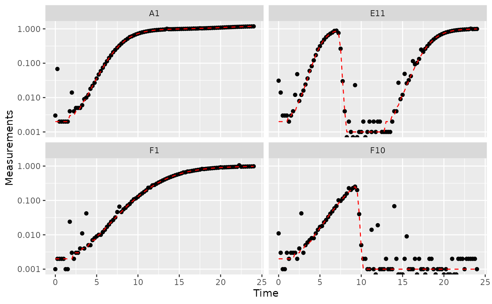
#Plot with a log y-axis
ggplot(data = dplyr::filter(ex_dat_mrg, Well %in% sample_wells),
aes(x = Time, y = Measurements, color = noise)) +
geom_point(alpha = 0.5) +
facet_wrap(~Well) +
scale_y_continuous(trans = "log10")
#> Warning: Transformation introduced infinite values in continuous y-axisGreat! Here we can see how the noisy and noiseless data compare. We’ve plotted our data both with linear axes and with log-transformed y-axes. log axes are useful because exponential growth is a straight line when plotted on a log scale, but in this case it also helps highlight the higher relative noise at low densities compared to high densities. In fact, this is a common occurrence: at low densities, random noise tends to have a much larger effect than at high densities.
This level of noise doesn’t seem like it would mess up calculations of maximum density or area under the curve much, so that’s not enough of a reason to smooth. But let’s look at what our derivatives look like.
ex_dat_mrg <-
mutate(group_by(ex_dat_mrg, Well, Bacteria_strain, Phage, noise),
deriv = calc_deriv(x = Time, y = Measurements, x_scale = 3600),
deriv_percap = calc_deriv(x = Time, y = Measurements, x_scale = 3600,
percapita = TRUE, blank = 0))
#Plot derivative
ggplot(data = dplyr::filter(ex_dat_mrg, Well %in% sample_wells),
aes(x = Time, y = deriv, color = noise)) +
geom_point(alpha = 0.5) +
facet_wrap(~Well, scales = "free_y")
#> Warning: Removed 8 rows containing missing values (`geom_point()`).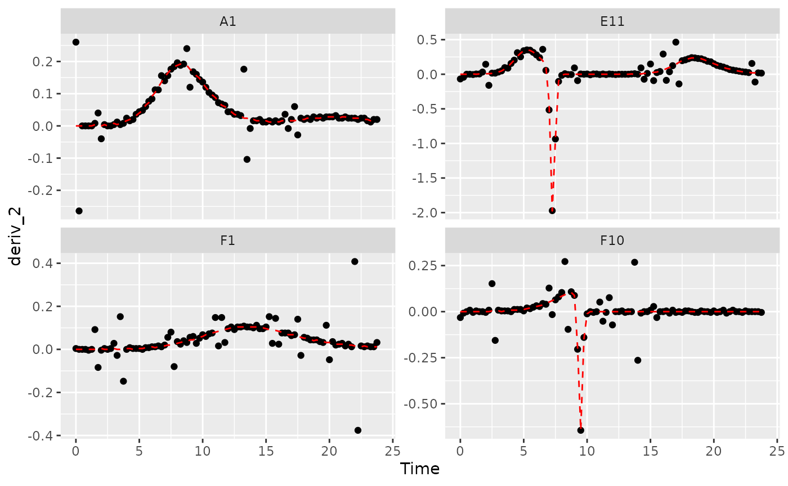
#Plot per-capita derivative
ggplot(data = dplyr::filter(ex_dat_mrg, Well %in% sample_wells),
aes(x = Time, y = deriv_percap, color = noise)) +
geom_point(alpha = 0.5) +
facet_wrap(~Well, scales = "free_y")
#> Warning: Removed 12 rows containing missing values (`geom_point()`).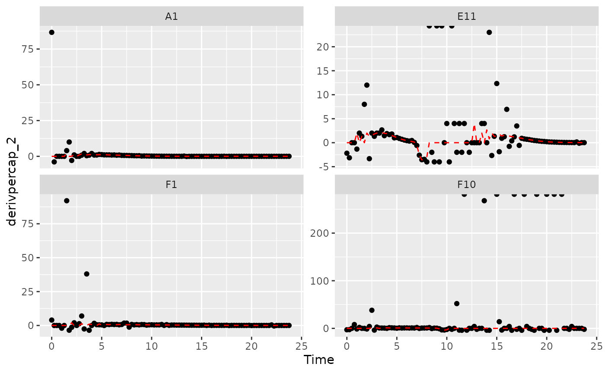
Those values are jumping all over the place, including some where the growth rate was calculated as infinite! Let’s see what we can do to address this.
Fitting during derivative calculation
One thing we can do is actually something we already did in the
Calculating Derivatives article (vignette("process")):
instead of calculating the derivative of each point relative to the
next, we can use a moving window of more than two points and fit a
linear regression to this data. In the earlier situation we had used
more than two points because of limited resolution at low densities.
However, the same solution can apply here. By calculating our
derivatives by fitting many points instead of just two, the effect of
any single noisy point will be reduced.
To use the fitting functionality of calc_deriv, we need
to specify either the window_width parameter, or the
window_width_n parameter. window_width
specifies how wide the window used to include points for the fitting is
in units of x, while window_width_n specifies
it in number of data points. Here, we’ll demonstrate its use by fitting
regressions with more data points. Note that when using
calc_deriv in this way, you should use as few
points as is necessary for your analyses to work, so you should
visualize different window widths and choose the smallest one that is
sufficient for your analyses to succeed.
ex_dat_mrg <-
mutate(group_by(ex_dat_mrg, Well, Bacteria_strain, Phage, noise),
deriv5 = calc_deriv(x = Time, y = Measurements, x_scale = 3600,
window_width_n = 5),
deriv_percap5 = calc_deriv(x = Time, y = Measurements, x_scale = 3600,
percapita = TRUE, blank = 0,
window_width_n = 5),
deriv7 = calc_deriv(x = Time, y = Measurements, x_scale = 3600,
window_width_n = 7),
deriv_percap7 = calc_deriv(x = Time, y = Measurements, x_scale = 3600,
percapita = TRUE, blank = 0,
window_width_n = 7),
deriv9 = calc_deriv(x = Time, y = Measurements, x_scale = 3600,
window_width_n = 9),
deriv_percap9 = calc_deriv(x = Time, y = Measurements, x_scale = 3600,
percapita = TRUE, blank = 0,
window_width_n = 9))
#Plot derivative
ggplot(data = dplyr::filter(ex_dat_mrg, Well %in% sample_wells),
aes(x = Time, y = deriv5, lty = noise)) +
geom_line(alpha = 0.5, color = "gray20") +
geom_line(aes(y = deriv7), color = "gray45") +
geom_line(aes(y = deriv9), color = "gray65") +
facet_wrap(~Well, scales = "free_y")
#> Warning: Removed 8 rows containing missing values (`geom_line()`).
#> Warning: Removed 12 rows containing missing values (`geom_line()`).
#> Warning: Removed 16 rows containing missing values (`geom_line()`).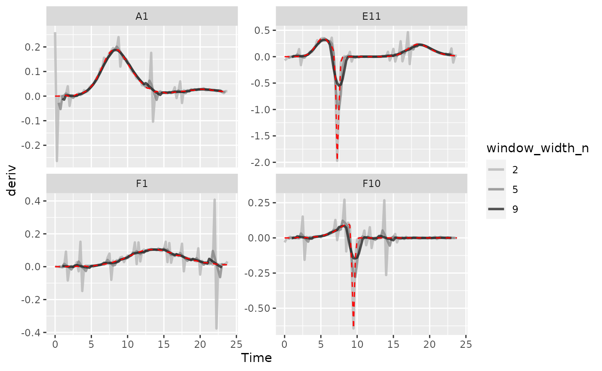
#Plot per-capita derivative
ggplot(data = dplyr::filter(ex_dat_mrg, Well %in% sample_wells),
aes(x = Time, y = deriv_percap, lty = noise)) +
geom_line(alpha = 0.5, color = "gray20") +
geom_line(aes(y = deriv_percap7), color = "gray45") +
geom_line(aes(y = deriv_percap9), color = "gray65") +
facet_wrap(~Well, scales = "free_y")
#> Warning: Removed 2 rows containing missing values (`geom_line()`).
#> Warning: Removed 12 rows containing missing values (`geom_line()`).
#> Warning: Removed 16 rows containing missing values (`geom_line()`).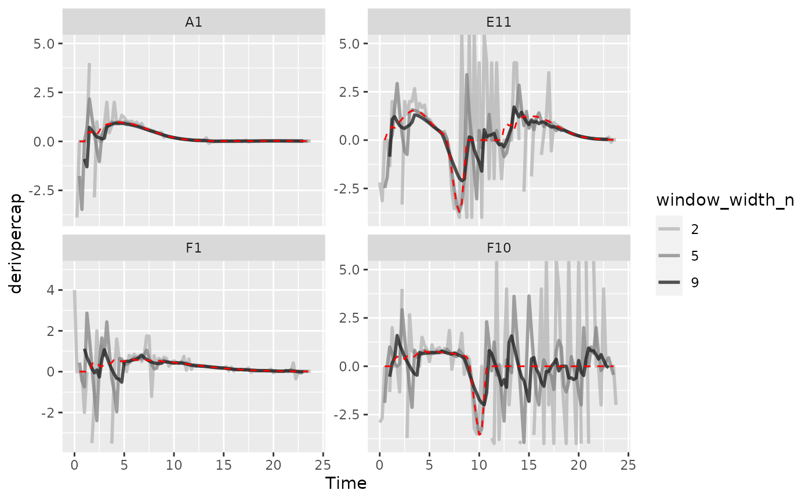
Great! As we can see, increasing the number of points in the derivative calculation reduces the amount of noise. However, we can also see that it tends to bias our results, making peaks less high and valleys less deep. Moreover, in some of our derivatives, especially the per-capita derivative, some noise remains. In the next two sections, we’ll explore how smoothing raw data and analyzing just a subset of our data can further reduce the effects on noise on our analyses.
Smoothing raw data
One of the most obvious approaches to deal with noise in our raw data
is to use a smoothing algorithm. gcplyr has a
smooth_data function that can carry out such smoothing.
Note that when using smooth_data, you should generally
carry out as little smoothing as is necessary for your analyses
to work, so you should visualize different degrees of smoothing and
choose the least smoothed one that is sufficient for your analyses to
succeed.
smooth_data has four different smoothing algorithms to
choose from: moving-average, moving-median,
loess, and gam.
-
moving-averageis a simple smoothing algorithm that primarily acts to reduce the effects of outliers on the data -
moving-medianis another simple smoothing algorithm that primarily acts to reduce the effects of outliers on the data -
loessis a spline-fitting approach that uses polynomial-like curves, which produces curves with smoothly changing derivatives, but can in some cases create curvature artifacts not present in the original data -
gamis also spline-fitting approach that uses polynomial-like curves, which produces curves with smoothly changing derivatives, but can in some cases create curvature artifacts not present in the original data
Additionally, all four smoothing algorithms have a tuning parameter that controls how “smoothed” the data are. For whichever smoothing method you’re using, you should plot smoothing with multiple different tuning parameter values, then choose the value that smooths the data as little as is necessary to reduce noise. Make sure to plot the smoothing for every well in your data, so that you’re choosing the best setting for all your data and not just one well.
Smoothing data is a step that alters the values you will analyze. Because of that, and because there are so many options for how to smooth your data, it is a step that can be rife with pitfalls. I recommend starting with the simplest and least “smoothed” smoothing, plotting your results, and only increasing your smoothing as much as is needed to enable downstream analyses. Additionally, when sharing your findings, it’s important to be transparent by sharing the raw data and smoothing methods, rather than treating the smoothed data as your source.
To use smooth_data, pass your x and y values, your
method of choice, and any additional arguments needed for the method. It
will return a vector of your smoothed y values.
Smoothing with moving-average
For moving-average, there are two tuning parameters to
choose between:
-
window_widthspecifies how wide the moving window used to calculate the average is in units ofx. -
window_width_nspecifies how many data points wide the moving window used to calculate the average is.
Specifying the window_width or
window_width_n is required, and larger values will be more
“smoothed”. Think carefully about whether you want to hold the
amount of time or the number of data points in each
window constant (if your data was all collected on constant intervals,
then there will be no difference).
Here, we’ll show moving averages with window_width_n
values of 3, 7, or 11 data points wide (because the window is centered
on each data point, window_width_n must be an odd number of
data points wide). Note that moving-average returns
NA for data points at the start and end of your data where
the window extends beyond the domain of your data.
ex_dat_mrg <-
mutate(group_by(ex_dat_mrg, Well, Bacteria_strain, Phage, noise),
smoothed3 = smooth_data(x = Time, y = Measurements,
sm_method = "moving-average", window_width_n = 3),
smoothed7 = smooth_data(x = Time, y = Measurements,
sm_method = "moving-average", window_width_n = 7),
smoothed11 = smooth_data(x = Time, y = Measurements,
sm_method = "moving-average", window_width_n = 11))
#What does the smoothed data look like compared to the noisy original?
#Lighter lines are wider window_width_n's and more "smoothed"
ggplot(data = dplyr::filter(ex_dat_mrg, Well %in% sample_wells),
aes(x = Time, lty = noise)) +
geom_line(aes(y = Measurements)) +
geom_line(aes(y = smoothed3), color = "gray20") +
geom_line(aes(y = smoothed7), color = "gray45") +
geom_line(aes(y = smoothed11), color = "gray65") +
facet_wrap(~Well) +
scale_y_continuous(trans = "log10")
#> Warning: Transformation introduced infinite values in continuous y-axis
#> Transformation introduced infinite values in continuous y-axis
#> Warning: Removed 4 rows containing missing values (`geom_line()`).
#> Warning: Removed 12 rows containing missing values (`geom_line()`).
#> Warning: Removed 20 rows containing missing values (`geom_line()`).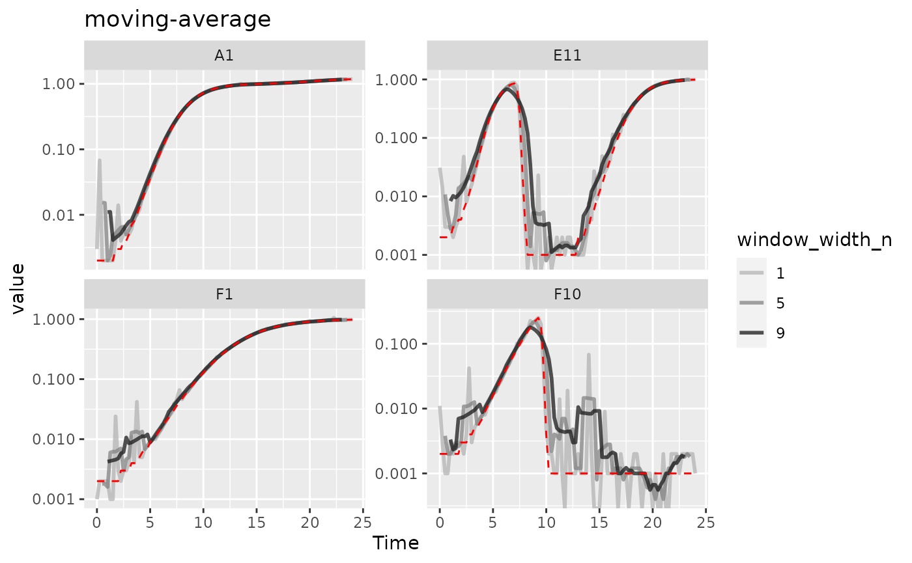
Here we can see that moving-average has helped reduce
the effects of some of that early noise. However, with
window_width_n = 11 (the lightest line), the smoothing has
started biasing our medium-density data points to be higher than they
actually are. Based on this, we’d probably want to use a
window_width_n less than 11. Unfortunately, with smaller
window_width_n our early data is still being affected by
that early noise, so we should explore other smoothing methods, or try
combining multiple smoothing methods.
Smoothing with moving-median
For moving-median, there are the same two tuning
parameters:
-
window_widthspecifies how wide the moving window used to calculate the average is in units ofx. -
window_width_nspecifies how many data points wide the moving window used to calculate the average is.
Specifying the window_width or
window_width_n is required, and larger values will be more
“smoothed”. Think carefully about whether you want to hold the
amount of time or the number of data points in each
window constant (if your data was all collected on constant intervals,
then there will be no difference).
Here, we’ll show moving medians with windows that are 3, 7, and 11
data points wide (because the window is centered on each data point, it
must be an odd number of data points wide). Note that
moving-median returns NA for data points at
the start and end of your data where the window extends beyond the
domain of your data.
ex_dat_mrg <-
mutate(group_by(ex_dat_mrg, Well, Bacteria_strain, Phage, noise),
smoothed3 =
smooth_data(x = Time, y = Measurements,
sm_method = "moving-median", window_width_n = 3),
smoothed7 =
smooth_data(x = Time, y = Measurements,
sm_method = "moving-median", window_width_n = 7),
smoothed11 =
smooth_data(x = Time, y = Measurements,
sm_method = "moving-median", window_width_n = 11))
#What does the smoothed data look like compared to the noisy original?
#Lighter lines are wider window_width_n's and more "smoothed"
ggplot(data = dplyr::filter(ex_dat_mrg, Well %in% sample_wells),
aes(x = Time, lty = noise)) +
geom_line(aes(y = Measurements)) +
geom_line(aes(y = smoothed3), color = "gray20") +
geom_line(aes(y = smoothed7), color = "gray45") +
geom_line(aes(y = smoothed11), color = "gray65") +
facet_wrap(~Well) +
scale_y_continuous(trans = "log10")
#> Warning: Transformation introduced infinite values in continuous y-axis
#> Transformation introduced infinite values in continuous y-axis
#> Transformation introduced infinite values in continuous y-axis
#> Transformation introduced infinite values in continuous y-axis
#> Warning: Removed 4 rows containing missing values (`geom_line()`).
#> Warning: Removed 12 rows containing missing values (`geom_line()`).
#> Warning: Removed 20 rows containing missing values (`geom_line()`).
Here we can see that moving-median has really excluded
that low-density noise, even with the smallest
window_width_n = 3. Additionally,
moving-median did not bias our larger data hardly at all,
except with the widest window_width_n. However, it has
produced a smoothed density that is fairly “jumpy”, something that wider
window_width_n did not fix. This is common with
moving-median, so often you may need to try other smoothing
methods or combining moving-median with other methods.
Smoothing with LOESS
For loess, the tuning parameter is the span
argument. loess works by doing fits on subset windows of
the data centered at each data point. These fits can be linear
(degree = 1) or polynomial (typically
degree = 2). span is the width of the window,
as a fraction of all data points. For instance, with the default
span of 0.75, 75% of the data points are included in each
window. Thus, span values typically are between 0 and 1 (although see
?loess for use of span values greater than 1),
and larger values are more “smoothed”. Here, we’ll show
loess smoothing with spans of 0.1, 0.2, and 0.5 and
degree = 1.
ex_dat_mrg <-
mutate(group_by(ex_dat_mrg, Well, Bacteria_strain, Phage, noise),
smoothed1 = smooth_data(x = Time, y = Measurements,
sm_method = "loess", span = .1, degree = 1),
smoothed2 = smooth_data(x = Time, y = Measurements,
sm_method = "loess", span = .2, degree = 1),
smoothed5 = smooth_data(x = Time, y = Measurements,
sm_method = "loess", span = .5, degree = 1))
#What does the smoothed data look like compared to the noisy original?
#Lighter lines are larger span's and more "smoothed"
ggplot(data = dplyr::filter(ex_dat_mrg, Well %in% sample_wells),
aes(x = Time, lty = noise)) +
geom_line(aes(y = Measurements)) +
geom_line(aes(y = smoothed1), color = "gray20") +
geom_line(aes(y = smoothed2), color = "gray45") +
geom_line(aes(y = smoothed5), color = "gray65") +
facet_wrap(~Well) +
scale_y_continuous(trans = "log10")
#> Warning: Transformation introduced infinite values in continuous y-axis
#> Warning in self$trans$transform(x): NaNs produced
#> Warning: Transformation introduced infinite values in continuous y-axis
#> Warning in self$trans$transform(x): NaNs produced
#> Warning: Transformation introduced infinite values in continuous y-axis
#> Warning: Removed 18 rows containing missing values (`geom_line()`).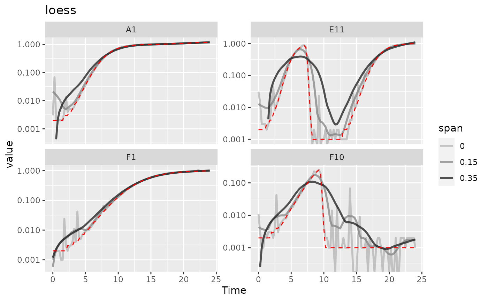
Here we can see that loess with smaller spans (darker
lines) have smoothed the data somewhat but are still sensitive to
outliers. However, loess with a larger span (lightest line)
has introduced significant bias. To fix this, we might explore other
smoothing methods, or combining loess with other smoothing
methods.
Smoothing with GAM
For gam, the primary tuning parameter is the
k argument. gam works by doing fits on subsets
of the data and linking these fits together. k determines
how many link points (“knots”) it can use. If not specified, the default
k value for smoothing a time series is 10, with
smaller values being more “smoothed” (note this is
opposite the trend with other smoothing methods). However,
unlike earlier methods, k values that are too large
are also problematic, as they will tend to ‘overfit’ the data.
k cannot be larger than the number of data points, and
should usually be substantially smaller than that. Also note that
gam can sometimes create artifacts,
especially oscillations in your density and derivatives. You should
check that gam is not doing so before carrying on with your
analyses. Here, we’ll show gam smoothing with
k values of 5, 10, and 20.
ex_dat_mrg <-
mutate(group_by(ex_dat_mrg, Well, Bacteria_strain, Phage, noise),
smoothed20 = smooth_data(x = Time, y = Measurements,
sm_method = "gam", k = 20),
smoothed10 = smooth_data(x = Time, y = Measurements,
sm_method = "gam", k = 10),
smoothed5 = smooth_data(x = Time, y = Measurements,
sm_method = "gam", k = 5))
#What does the smoothed data look like compared to the noisy original?
#Lighter lines are smaller k and more "smoothed"
ggplot(data = dplyr::filter(ex_dat_mrg, Well %in% sample_wells),
aes(x = Time, lty = noise)) +
geom_line(aes(y = Measurements)) +
geom_line(aes(y = smoothed20), color = "gray20") +
geom_line(aes(y = smoothed10), color = "gray45") +
geom_line(aes(y = smoothed5), color = "gray65") +
facet_wrap(~Well) +
scale_y_continuous(trans = "log10")
#> Warning: Transformation introduced infinite values in continuous y-axis
#> Warning in self$trans$transform(x): NaNs produced
#> Warning: Transformation introduced infinite values in continuous y-axis
#> Warning in self$trans$transform(x): NaNs produced
#> Warning: Transformation introduced infinite values in continuous y-axis
#> Warning in self$trans$transform(x): NaNs produced
#> Warning: Transformation introduced infinite values in continuous y-axis
#> Warning: Removed 2 rows containing missing values (`geom_line()`).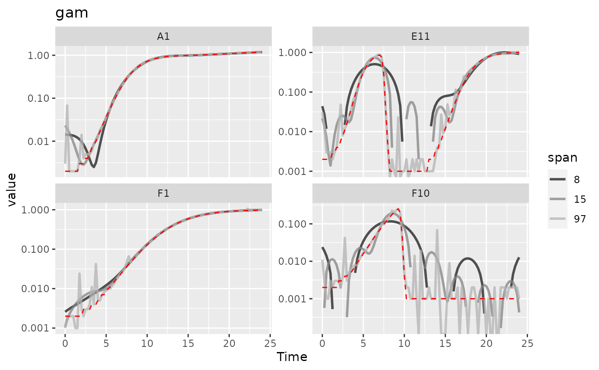
Here we can see that gam does alright when working with
the no phage-added wells (A1 and F1): higher k values
(darkest line) have smoothed the data but are still sensitive to those
early outliers, while lower k values (lighter lines) have
introduced significant bias. However, gam is struggling
when phage have been added (E11 and F10). Across all the k
values it has added many fluctuations and often dips into values of 0 or
lower (plotted here as breaks in the line, since the log of numbers
<= 0 are undefined). To fix this, we might explore other smoothing
methods or combining gam with other smoothing methods.
Combining multiple smoothing methods
Often, combining multiple smoothing methods can provide improved
results. For instance, moving-median is particularly good
at removing outliers, but not very good at producing continuously smooth
data. In contrast, moving-average, loess, and
gam work better at producing continuously smooth data, but
aren’t as good at removing outliers. Here’s an example using the
strengths of both moving-median and
moving-average. (Note that earlier columns created in
mutate are available during creation of later columns, so
both can be done in one step):
ex_dat_mrg <-
mutate(group_by(ex_dat_mrg, Well, Bacteria_strain, Phage, noise),
smoothed_med3 =
smooth_data(x = Time, y = Measurements,
sm_method = "moving-median", window_width_n = 3),
#Note that for the second round, we're using the
#first smoothing as the input y
smoothed =
smooth_data(x = Time, y = smoothed_med3,
sm_method = "moving-average", window_width_n = 3))
#What does the smoothed data look like compared to the noisy original?
#The first round of smoothing with moving-median is plotted in lighter colors
#The second round of smoothing with moving-average is plotted in darker colors
ggplot(data = dplyr::filter(ex_dat_mrg, Well %in% sample_wells),
aes(x = Time, lty = noise)) +
geom_line(aes(y = Measurements)) +
geom_line(aes(y = smoothed_med3), color = "gray20") +
geom_line(aes(y = smoothed), color = "gray65") +
facet_wrap(~Well) +
scale_y_continuous(trans = "log10")
#> Warning: Transformation introduced infinite values in continuous y-axis
#> Transformation introduced infinite values in continuous y-axis
#> Transformation introduced infinite values in continuous y-axis
#> Warning: Removed 4 rows containing missing values (`geom_line()`).
#> Warning: Removed 8 rows containing missing values (`geom_line()`).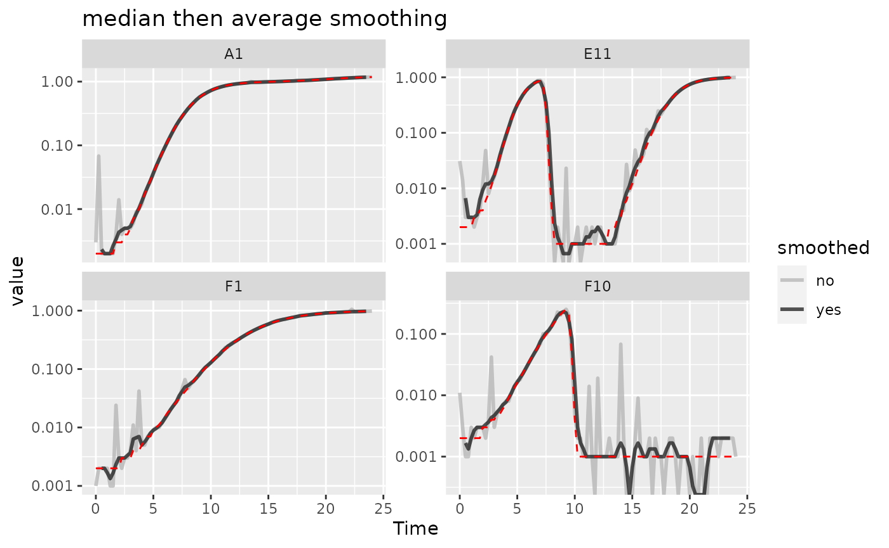
Here we can see that the combination of minimal
moving-median and moving-average smoothing has
produced a curve that has most of the noise removed with minimal
introduction of bias. (Note that the first and last 2 data points are
now NA because of the smoothing)
Calculating derivatives of smoothed data
Once you’ve smoothed your data, you can calculate derivatives using the smoothed data. Combining smoothing of raw data and fitting using multiple points for calculating derivatives can be a powerful combination for reducing the effects of noise while minimizing the introduction of bias.
ex_dat_mrg <-
mutate(group_by(ex_dat_mrg, Well, Bacteria_strain, Phage, noise),
deriv = calc_deriv(x = Time, y = smoothed, x_scale = 3600),
deriv_percap = calc_deriv(x = Time, y = smoothed, x_scale = 3600,
percapita = TRUE, blank = 0),
deriv3 = calc_deriv(x = Time, y = smoothed, x_scale = 3600,
window_width_n = 3),
deriv_percap3 = calc_deriv(x = Time, y = smoothed, x_scale = 3600,
percapita = TRUE, blank = 0,
window_width_n = 3))
#Plot derivative
ggplot(data = dplyr::filter(ex_dat_mrg, Well %in% sample_wells),
aes(x = Time, y = deriv, lty = noise)) +
geom_line(alpha = 0.5, color = "gray20") +
geom_line(aes(y = deriv3), color = "gray65") +
facet_wrap(~Well, scales = "free_y")
#> Warning: Removed 10 rows containing missing values (`geom_line()`).
#> Warning: Removed 12 rows containing missing values (`geom_line()`).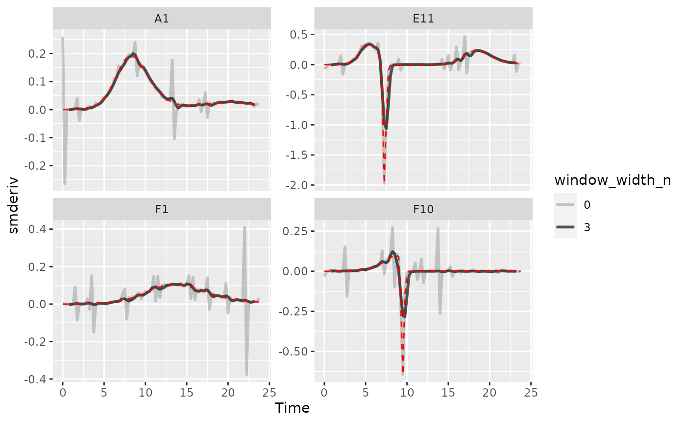
#Plot per-capita derivative
ggplot(data = dplyr::filter(ex_dat_mrg, Well %in% sample_wells),
aes(x = Time, y = deriv_percap, lty = noise)) +
geom_line(alpha = 0.5, color = "gray20") +
geom_line(aes(y = deriv_percap3), color = "gray65") +
facet_wrap(~Well, scales = "free_y")
#> Warning: Removed 10 rows containing missing values (`geom_line()`).
#> Removed 12 rows containing missing values (`geom_line()`).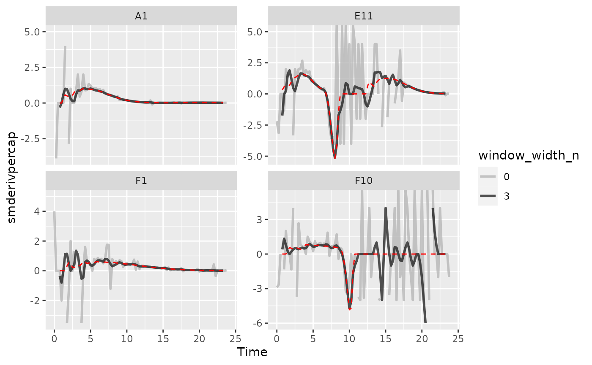
Summarizing on subsets of derivatives
There is one final strategy we can employ when dealing with noisy data: since noise often has relatively stronger effects when densities are near 0, we can simply exclude data points where the density is near 0.
Let’s look again at our smoothed per-capita growth rates:
ggplot(data = dplyr::filter(ex_dat_mrg, Well %in% sample_wells),
aes(x = Time, y = deriv_percap3, lty = noise)) +
geom_line() +
facet_wrap(~Well, scales = "free")
#> Warning: Removed 12 rows containing missing values (`geom_line()`).And now let’s compare to the density plots:
ggplot(data = dplyr::filter(ex_dat_mrg, Well %in% sample_wells),
aes(x = Time, y = smoothed)) +
geom_line() +
facet_wrap(~Well, scales = "free")
#> Warning: Removed 8 rows containing missing values (`geom_line()`).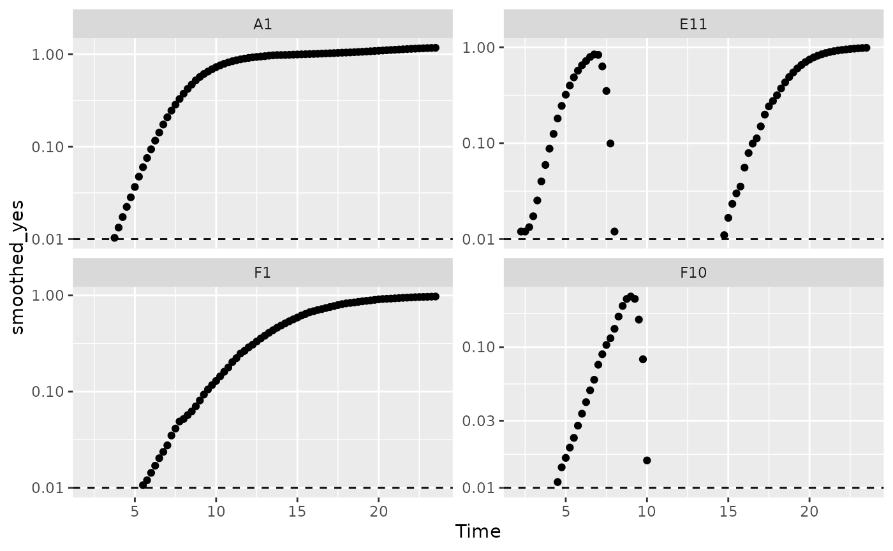
Clearly we can see that most of the noise in the per-capita growth rate occurs when the bacterial population density is very low. Indeed, this is common with per-capita growth rates, which are very sensitive to noise at low densities. What can we do about it? We can simply exclude all the values when the density is really low.
Let’s plot our per-capita growth rate data at different cutoffs for the minimum density of bacteria:
for (my_well in sample_wells) {
#Title
title <- cowplot::ggdraw() +
cowplot::draw_label(paste("Well", my_well),
fontface = "bold", x = 0, hjust = 0) +
theme(plot.margin = margin(0, 0, 0, 7))
#Save x and y limits for all plots so they're all on the same axes
xdat <- dplyr::filter(ex_dat_mrg, Well == my_well)$Time
ydat <- dplyr::filter(ex_dat_mrg, Well == my_well)$deriv_percap3
xlims <- c(min(xdat[is.finite(xdat)], na.rm = TRUE),
max(xdat[is.finite(xdat)], na.rm = TRUE))
ylims <- c(min(ydat[is.finite(ydat)], na.rm = TRUE),
max(ydat[is.finite(ydat)], na.rm = TRUE))
#Plot unfiltered data
p1 <- ggplot(data = dplyr::filter(ex_dat_mrg, Well == my_well),
aes(x = Time, y = deriv_percap3, color = noise)) +
geom_point(alpha = 0.5) + facet_wrap(~Well, scales = "free") +
ggtitle("all data") +
xlim(xlims[1], xlims[2]) + ylim(ylims[1], ylims[2])
#Plot data with filters for density
p2 <- ggplot(data = dplyr::filter(ex_dat_mrg,
Well == my_well, smoothed > 0.001),
aes(x = Time, y = deriv_percap3, color = noise)) +
geom_point(alpha = 0.5) + facet_wrap(~Well, scales = "free") +
ggtitle("data where Abs > 0.001") +
xlim(xlims[1], xlims[2]) + ylim(ylims[1], ylims[2])
p3 <- ggplot(data = dplyr::filter(ex_dat_mrg,
Well == my_well, smoothed > 0.005),
aes(x = Time, y = deriv_percap3, color = noise)) +
geom_point(alpha = 0.5) + facet_wrap(~Well, scales = "free") +
ggtitle("data where Abs > 0.005") +
xlim(xlims[1], xlims[2]) + ylim(ylims[1], ylims[2])
p4 <- ggplot(data = dplyr::filter(ex_dat_mrg,
Well == my_well, smoothed > 0.01),
aes(x = Time, y = deriv_percap3, color = noise)) +
geom_point(alpha = 0.5) + facet_wrap(~Well, scales = "free") +
ggtitle("data where Abs > 0.01") +
xlim(xlims[1], xlims[2]) + ylim(ylims[1], ylims[2])
print(cowplot::plot_grid(title, cowplot::plot_grid(p1, p2, p3, p4, ncol = 2),
ncol = 1, rel_heights = c(0.1, 1)))
}
#> Warning: Removed 12 rows containing missing values (`geom_point()`).
#> Warning: Removed 4 rows containing missing values (`geom_point()`).
#> Warning: Removed 2 rows containing missing values (`geom_point()`).
#> Removed 2 rows containing missing values (`geom_point()`).
#> Warning: Removed 12 rows containing missing values (`geom_point()`).
#> Warning: Removed 4 rows containing missing values (`geom_point()`).
#> Warning: Removed 2 rows containing missing values (`geom_point()`).
#> Removed 2 rows containing missing values (`geom_point()`).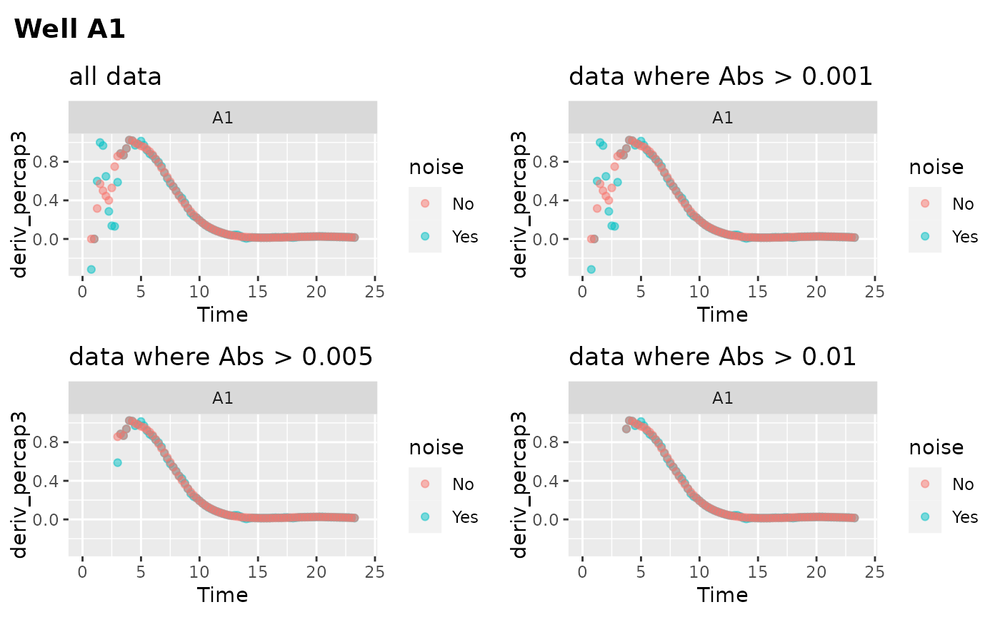
#> Warning: Removed 14 rows containing missing values (`geom_point()`).
#> Warning: Removed 3 rows containing missing values (`geom_point()`).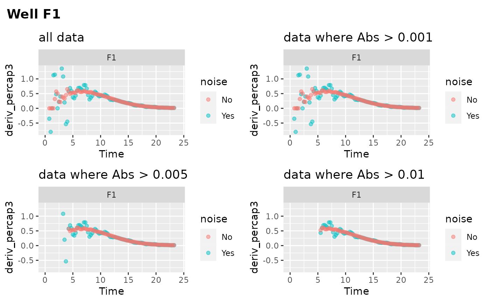
#> Warning: Removed 12 rows containing missing values (`geom_point()`).
#> Warning: Removed 4 rows containing missing values (`geom_point()`).
#> Warning: Removed 3 rows containing missing values (`geom_point()`).
#> Warning: Removed 2 rows containing missing values (`geom_point()`).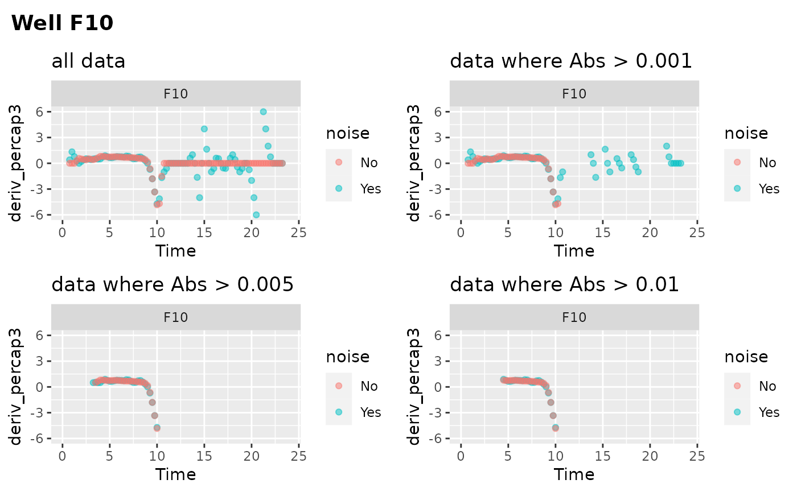
As we can see, as we limit our analyses to derivatives where the bacterial population is above a cutoff density, many of the most noisy points disappear, and the noisy derivative curves look increasingly similar to the noiseless derivative curves.
To take this to the final step, we can use these cutoffs in our
summarize commands to calculate the maximum growth rate of
the bacteria when their density is at least 0.005.
ex_dat_mrg_sum <-
summarize(group_by(ex_dat_mrg, Well, Bacteria_strain, Phage, noise),
max_growth_rate = max(deriv_percap3[smoothed > 0.01],
na.rm = TRUE))
#> `summarise()` has grouped output by 'Well', 'Bacteria_strain', 'Phage'. You can
#> override using the `.groups` argument.
head(ex_dat_mrg_sum)
#> # A tibble: 6 × 5
#> # Groups: Well, Bacteria_strain, Phage [3]
#> Well Bacteria_strain Phage noise max_growth_rate
#> <fct> <chr> <chr> <chr> <dbl>
#> 1 A1 Strain 1 No Phage No 1.02
#> 2 A1 Strain 1 No Phage Yes 1.02
#> 3 A2 Strain 2 No Phage No 1.35
#> 4 A2 Strain 2 No Phage Yes 1.49
#> 5 A3 Strain 3 No Phage No 0.935
#> 6 A3 Strain 3 No Phage Yes 1.19And now we can visualize our findings:
ggplot(data = dplyr::filter(ex_dat_mrg,
Well %in% sample_wells, smoothed >= 0.01),
aes(x = Time, y = deriv_percap3, color = noise)) +
geom_point() +
facet_wrap(~Well, scales = "free") +
ggtitle("data where smoothed density > 0.01") +
geom_hline(data = dplyr::filter(ex_dat_mrg_sum, Well %in% sample_wells),
aes(yintercept = max_growth_rate, color = noise), lty = 2)
#> Warning: Removed 6 rows containing missing values (`geom_point()`).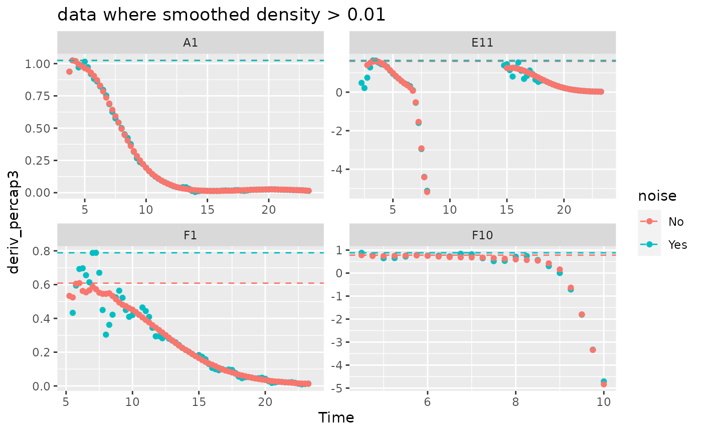
Here we can see that by limiting our analyses to just a subset of the data, the maximum per-capita growth rate is nearly identical in three of the example wells, while in F1 the noise is altering the calculated maximum somewhat. If this happens in your data, continue to try alternate smoothing, derivative calculating, and subset strategies to try to further reduce the effects of noise on your findings.
What’s next?
Now that you’ve analyzed your data and dealt with any noise, there’s just some concluding notes on best practices for running statistics, merging growth curve analyses with other data, and additional resources for analyzing growth curves.
- Introduction:
vignette("gcplyr") - Importing and transforming data:
vignette("import_transform") - Incorporating design information:
vignette("incorporate_designs") - Pre-processing and plotting your data:
vignette("preprocess_plot") - Processing your data:
vignette("process") - Analyzing your data:
vignette("analyze") - Dealing with noise:
vignette("noise") -
Statistics, merging other data, and other
resources:
vignette("conclusion")